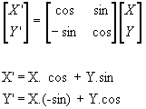
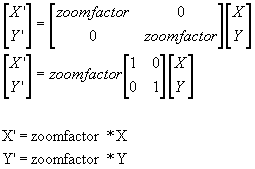
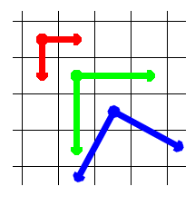

|
| |
If you ever get in contact with the current batch of business
IT developers, you can test their knowledge of demo programming by asking
them to make a zooming rotator. Since this is not about e-business or about
handling a lot of — hopefully structured — data in a database, you will probably
find a lot of them giving forfeit, a lot of them will turn to the most
obvious solution at hand. They will start to deform circles. Do not be surprised
if their first attempt will behave a lot like the following basic code.
Look mama, no optimisations
| basic-listing:
ROT1.ASC |
10 screen 8,0:set page 1,1
20 zf=1:za=0.4:al=0.2
30 pi=4*atn(1)
40 for r=1to50:for i= 0 to 2*pi step pi/32
50 setpage,1:c=point(128+r*cos(i),106+r*sin(i))
60 setpage,0:pset(128+zf*r*cos(i+al),106+zf*r*sin(i+al)),c
70 next i,r
|
|
|
This is obviously a simple solution. What happens here is that we are rotating
around the middle of the screen. We stand in the middle and look around us in
steps of ± 10 degrees each time and with a radius r. We store the
colour of this point in c and calculate were this point should be if we rotate
it some degrees further and alter the radius by our zoom factor zf. For the
mathematicians: we do not use the normal screen coordinates, instead we use polar coordinates to calculate the new position of the point
(radius, angle) to (radius×zf, angle+offset).
Disadvantages
Although the reasoning used in the previous
program is mathematically correct, everybody will agree that in practice it is
insufficient. You could make a zooming rotator in this way, if you would
translate all of the infinitely small points of a
mathematical plane. This thing can not be done very well in the not so
abstract computer bitmaps. First of all, in the mathematics point of view
every point has dimension zero. This means that to cross even the smallest
distance we need an infinite number of points. Rotating them will therefore
take an infinite amount of time, which we do not have.
OK, the above statement was just an other theoretical remark. Here are some
real flaws of the program:
- The program calculates too many or too few points.
For every radius it takes the same amount of points on the circle, on the
smaller circles a lot of points will overlap so too many points are calculated.
The circle will be drawn completely but it is slow. On the greater
circles there will not be enough points calculated to fill the entire circle and
you will see giant gaps appear.
- You will calculate a filled circle
In most case however we want to have a rectangle as end result of the zooming
rotator. If for example the purpose would be to fill the screen, you would have
to calculate a lot of points, which would be discarded afterwards because their
final position is on an off screen coordinate.
- Empty points
A computer has to store its numbers internally with a finite number of
digits — this in itself already introduces rounding errors — something the
used mathematical solution did not take into consideration. Later these imperfect
numbers are again submitted to truncating, introducing even more possible
rounding errors. Concretely, this results in points on screen which will never
be filled with an other colour, introducing a moiré effect.
A lot of these effects can be corrected in a very crude way:
- If we would take into account how many points we would have to
calculate for a given radius r this argument can be circumvented. We could for
example store all these values in a simple array.
- You could of course test if the rotated point is inside the box
(x1,y1)-(x2,y2). You could check even if it is inside a triangle or some other
weird shape. On the other hand these extra tests will slow down the
process even more.
- Instead of drawing a single point, you could draw small boxes. These
boxes will overlap each other, but they will also overlap the empty holes in
the end result.
A more elegant approach
The previous solution really was a first attempt, now let us start to think
about what we want to achieve. We want to take an original picture and rotate
the points so that we get a rotated and possibly zoomed version of it.
So it makes more sense to take every original point and calculate the new
position of it.
People who like mathematics will certainly be aware of the rotation and
scaling formulas, see Figures 1 and 2.
 |
| Figure 1:
Standard rotation formula |
|
|
|
 |
| Figure 2:
Standard scaling formula |
|
|
|
If you combine them, you get the formulas of Figure 3. So:
X' = zoomfactor ( X.cos + Y.sin )
Y' = zoomfactor ( X.(-sin) + Y.cos )
Now that we have these formulas, let us create a second program.
We will take every point of the image we want to deform and calculate its new
coordinates. Also, at this point we can already introduce great speed gains. For example,
all the points we are going to rotate we need to calculate
the sines and cosines of angle alpha only once. We will store this value in a
variable. If we store the scaling factor in another variable we can again
gain some speed. Here is the first version of our enhanced program.
| basic-listing:
ROT2.ASC |
10 screen 8,0:set page 1,1
20 bload"picture.sr8",s
30 zf=1:al=0.2
40 co=cos(al):si=sin(al)
50 for x=-50 to 50:for y=-50 to 50
60 xa=(x*co+y*si)*zf
70 xy=(y*co-x*si)*zf
80 setpage,1:c=point(128+x,106+y)
90 setpage,0:pset(128+xa,106+ya),c
100 next x,y
|
|
|
This solution is much better.
- We do not have to calculate the sines and cosines over and over again. We
just calculate it once and then we can store it in some variables. This
increases speed a lot.
- Every point in our source picture is calculated
only once. We will not do the math for the same point over and over again.
Of course some problems are still there. If we zoom in too much we will
still have gaps, and if we zoom out too much we will again overdraw most of the
points.
An other perspective
Up until now we always started out from our known picture and tried to
calculate the points for the unknown picture. We have noticed in our
examples we keep having problems because some points in our final picture
are not filled in, or some points of the picture are overdrawn. Another problem
is that we do not know exactly where our new picture will end up
on the screen.
Maybe it is time to change our way of looking upon the problem
and reverse our question. We are not longer interested in “Where will the
original points end up in the final picture” but the more accurate question
should be “what should be the colour of our points in the final picture”.
If we look at the problem this way, we solve both problems mentioned in the previous paragraph in one go.
Adjusting a previous example
Let us take our last basic program. Instead of taking a rectangle of 100 by 100
and rotate this original, let us calculate the points we should need to fill
up a rectangle of 100 by 100. We are going to take every point in our final
picture and calculate its position in the original one. We could
take out formulas:
X' = zoomfactor ( X.cos + Y.sin )
Y' = zoomfactor ( X.(-sin) + Y.cos )
and recalculate them for X and Y, but it is much simpler to say
new rotation angle = -(original angle)
new zoomfactor = 1/(original zoomfactor)
This means that if we do not change these two parameters we will
just change the rotation direction and instead of zooming in we will be
zooming out. Keeping this in mind we can simple change line 80 and
90
| basic-listing:
ROT2FIX.ASC |
80 setpage,1:c=point(128+xa,106+ya)
90 setpage,0:pset(128+x,106+y),c
|
|
|
And abracadabra! We have a zooming rotator. One that is free of all the major
disadvantages we had in our previous examples, there are no gaps, no doubly
calculated points and we now exactly which place to reserve on screen for the
end result.
The above solution is a fast and clean piece of program that is easy to
understand and rather gracefully combines the pure mathematical approach and
the real computer implementation of pixels. For demo programmers there
still is a faster solution.
And now for the really speedy solution
Most demo programmers will tell you that the best way to achieve fast results
is to use only integer — or fixed point — calculation and that one should
use as simple instructions as possible because they execute the fastest. In
our case this means that we should get rid of all those
multiplications.
Let us have a look at Figure 4.
 |
Figure 4:
Red: this is a normal stepvector
Green: If we zoom out we start to skip points
Blue: Zoomed out and rotated
|
|
|
Again we change our strategy just a little. Instead of taking every point
separately through the rotation formula we could say we start at the upper left
corner of the on screen drawing and take a step to the left: in vector
notation we take a step (1,0). You can read this as x=x+1 and y=y+0.
If our original picture is not zoomed and rotated, this would also be a
step of (1,0) in our original image. If we would have a zoom factor of 2 this
would mean that for every step (1,0) in our result we would take a step of
(1/2,0) in the original.
If we would have rotate our picture over 90 degrees instead of zooming, we
would take steps of (0,1) in our original for every (1,0) step in the final on screen result.
What we are going to do is the following. Instead of calculating every point, we are just
going to calculate the start of our line. We are also going to have to calculate
what the size and direction of our step is going to be. This is very simple: we
will rotate (1,0) by using our formulas and the corresponding (x,y) is exactly
the step we need.
Of course, if we can take steps of (1,0) for our horizontal line we can also
take steps of (0,1) to change our vertical lines. So what we need to calculate
using our formulas are 3 points:
- The upper left corner after rotation
- The corresponding steps we need to make to step 1 to the left in our
result
- The size of the step needed to descend a line
Here is the final basic program:
| basic-listing:
ROT3.ASC |
10 screen 8,0:set page 1,1
20 bload"picture.sr8",s:set page 0
30 zf=1:al=0.2:zs=0.2 REM Zoomfactor and rotation angle
40 co=cos(al):si=sin(al):REM on time (co)sine calculation for current frame
50 x=-50:y=-50 REM coordinates of upper left corner
60 xc=(x*co+y*si)*zf+128
70 yc=(y*co-x*si)*zf+106 REM XC,YC the coordinates in original picture
80 REM Calculating step (0,1)
90 xv=(si)*zf+128
100 yv=(co)*zf+106 REM XC,YC the coordinates in original picture
110 REM Calculating step (1,0)
120 xh=(co)*zf
130 yh=(-si)*zf REM XC,YC the coordinates in original picture
140 REM getting trough the picture
150 for i=0to100
160 x=xc:y=yc
170 xc=xc+xv:yc=yc+yv REM XC,YC placed one step vertical step lower
180 for j=0to100
190 setpage,1:c=point(x,y)
200 x=x+xh:y=y+yh
210 setpage,0:pset(j,i),c
220 next j,i
230 al=al+0.01
240 zf=zf+zs:if ((zf=1) or(zf=5)) then zs=-zs
250 goto 40
|
|
|
The way this program works is rather easy to understand.
- In the first lines we set up the screen and load the original picture
- We initialise the zoom factor (zf), the rotation angle alpha (al) and the zoom speed (zs)
- Calculating sines and cosines takes a lot of time so we calculate it once and then store the result in a variable; this will speed up the basic program.
- We rotate the upper left corner and store these values in xc and yc, our short notation of x-corner and y-corner.
- We calculate the step size for a vertical step and store it in xv and yv.
- And we do the same for a horizontal step in xh and yh.
Then we walk through the resulting picture from left to right (horizontal) and from top to bottom.
- Since we need the corner coordinates later we first copy their values in some more convenient variables, x and y.
- For every horizontal step, represented by variable j, we add a (rotated and zoomed) horizontal step to x and y in our original picture.
- After having walked over a horizontal line we still have the coordinates of our corner in xc and yc. For our next horizontal line we will need start one vertical line below the original corner. So we add a vertical step to our corner coordinates from this step on we can draw a new horizontal line.
- Once our entire result has been calculated we change the rotation and zooming factor and start all over again, calculating xc, yc, xv, yv, xh and yh and redrawing the picture.
Except for the occasional DEFINT and DEFDBL this is as fast as it can get in basic. The demo programmer will use assembly and luckily the last solution can be very easily ported to it.
Possible optimisations in assembly
Here are some hints for the assembly programmers if you want to produce some really fast code. I will not give the entire solution since it is more fun to make one yourself.
- The calculation of the sines and cosines will be very fast if one uses a look up table.
- Using fixed point you can easily use the ADD HL,DE instruction. Use H as the integer part and L as the fractional part and you have the perfect way to make some fast code.
- Try to make the original picture have a width of 32, 64, 128 or even
better 256. This will make it very simple to look up the colour value of the
original point.
- Remember, a Z80/R800 has a double set of registers.
If you want to be creative do not look at this example. If you are not intending to write one yourself, but you would like to see a fast inner loop, a nice example is given below. This inner loop is the equivalent of the basic lines 180-220.
| ML-listing:
INNRLOOP.ASC |
; The picture is stored at #0000 and has dimensions (256, ??)
; One byte is one pixel
; VRAM write is set to the correct address
; B is the number of horizontal pixels
; C is #98
; HL is x
; DE is xh
; HL' is y
; DE' is yh
LOOP:
ADD HL,DE ; X=X+XH
LD A,H
EXX
ADD HL,DE ; Y=Y+YH
LD C,L
LD B,A
LD A,(BC)
EXX
OUT (C),A
DJNZ LOOP
|
|
|
Same idea, other result
With the fixed-point-step-trough-a-picture method described above you have seen
that it is very easy to rotate a picture, scale a picture or do both at the
same time. This is also the basis for simple texture mapping. There are however
some other nice effects to create. You could add a sine to what we have called
xv and yv or both at the same time. This would create a wave effect in the
final result. Or you could play with the values of xh and yh during the tracing
of a horizontal line. If you do this it is possible to create all kinds of lens
like effects. The few pictures below give you some results of what can be done
when these variables are altered during the calculation instead of
keeping them fixed. Editor’s note: we have never recieved the pictures David mentions here and after asking him, he could not find them back either... So, we apologise for the missing pictures!
A simple idea and a little implementation that opens a whole range of possibilities when used with a little imagination. Great demos are made with great music, great graphics, great programming and some very creative imagination. I wish you all a lot of fun and creativity when playing with these routines, it could well result in some new great demos.
|